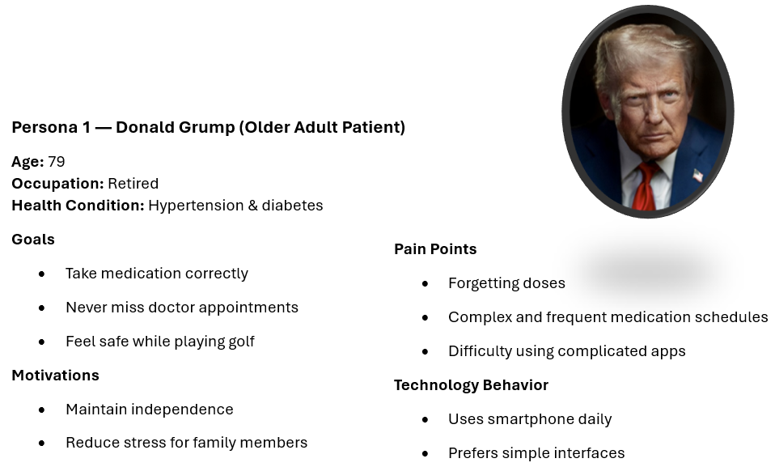
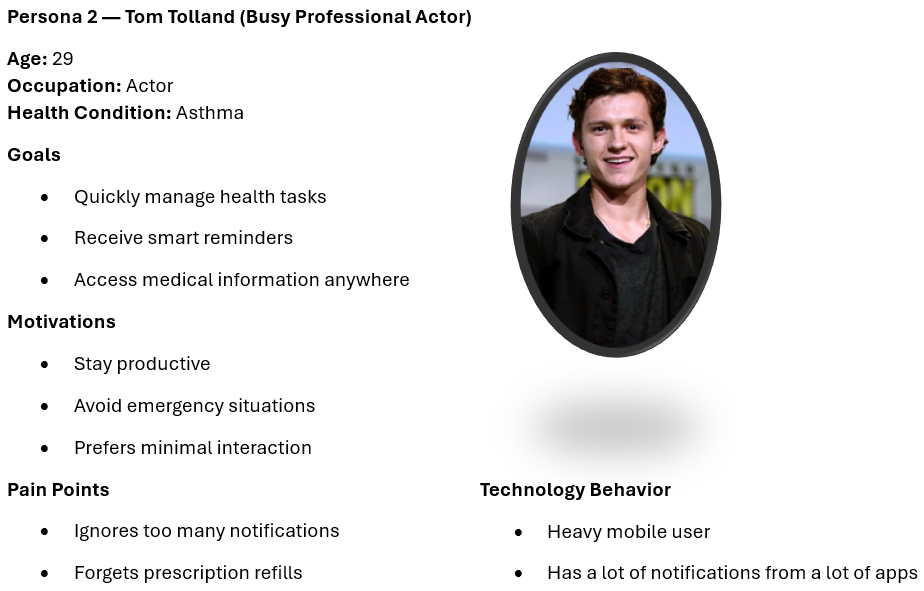
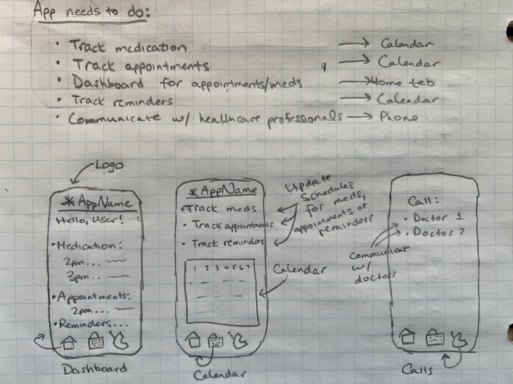
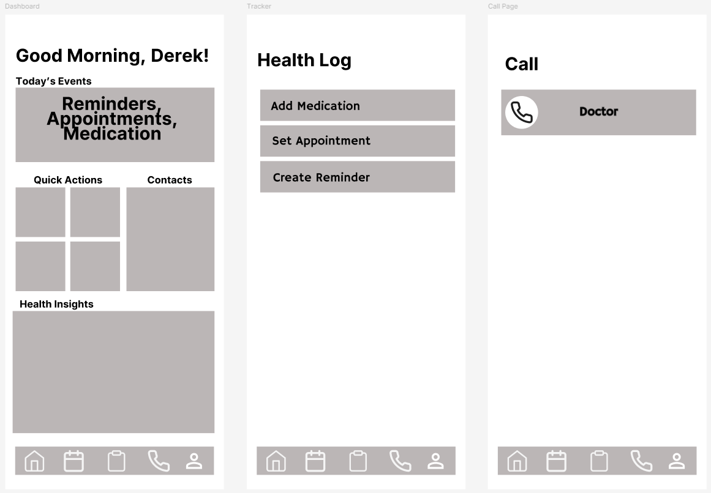
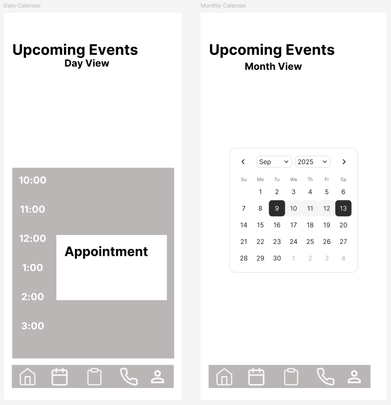
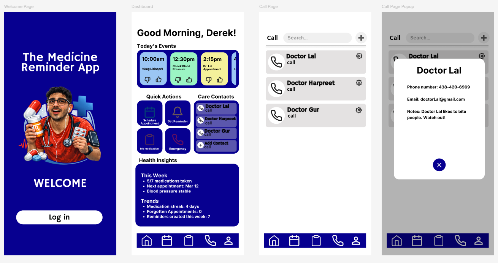
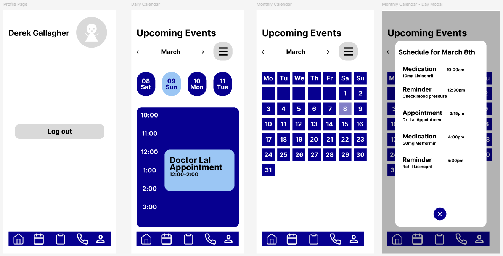
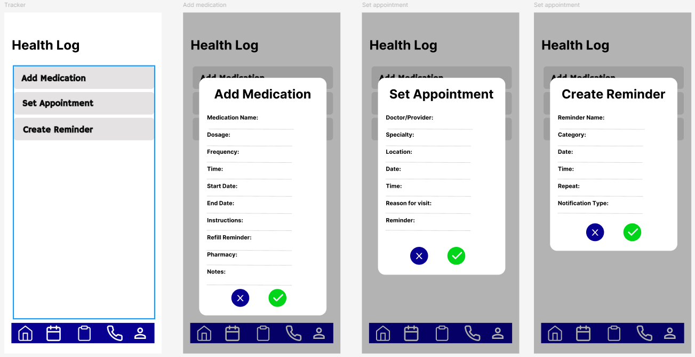

1. Introduction
People with chronic health conditions are forced to constantly manage medication and doctors’ appointments. A lot of these people struggle in juggling all these events and can sometimes forget some. This can lead to worsening conditions or issues that can affect these people negatively.
The goal of the Health Companion Super App is to be able to help these users that have chronic health conditions to better manage their medication and doctor appointments. This will be done through multiple strategies like setting reminders, tracking medication usage, and communicating directly with the healthcare professionals.
Problem Statement
Managing health responsibilities frequently causes stress, anxiety, confusion, and frustration. Common problems include uncertainty about whether medication was taken, notifications blending with other alerts, and difficulty tracking multiple responsibilities.
Goal Strategy
This case study will focus on designing a good UI/UX to understand users needs to ultimately create a very clean, accessible and intuitive mobile application that can be easily used by anybody.
2. User Research & Personas
2.1 Research Methods
The objectives of this research are to understand better how people which chronic health conditions manage their medication and appointment schedules and to identify any possible pain points in this current process.
To collect data, the following method was used:
- Online Survey: 11 responses collected.
Key Detailed Findings
-
Users have levels of medication that vary, which means the solution must support both frequent and occasional medicine takers rather than targeting only chronic patients.
-
Users primarily rely on memory, other people, or simple tools (pill boxes, calendars) to manage their health tasks instead of health applications.
-
Users would prefer to be contacted by either text message, email or push notification.
-
Many users believe they are organized but still forget appointments, showing a gap between perceived organization and actual behavior.
Pain Points
Some of the other charts from the survey show that users usually communicate with their doctors through phone calls and that they rarely prepare questions beforehand. Users also specify that their health information is spread across multiple places rather than tracked in a single system, and these behaviors appear across multiple age groups, appearing mostly in the 45-55 age range.
Needs Identified
- Clear confirmation after completing a health task.
- Smart reminders that stand out without being excessive.
- A centralized dashboard for medications and appointments.
- Participants strongly value having health information organized in one place.
2.2 Personas
Two personas were designed to create realistic user profiles that represent the target audience.


3. User Journey Mapping
Leave blank for now.
Journey Map: [Persona 1 Name]

Figure 3.1: Journey Map for Donald Grump.
Journey Map: [Persona 2 Name]

Figure 3.2: Journey Map for Tom Tolland.
4. Design Process & Visuals
4.1 Sketches
Initial sketches focused on simplifying user interaction. The home screen shows today's medications and upcoming appointments briefly. Other features include tracking your schedule (for medication, appointments and reminders), and making calls to doctors.

4.2 User Flow Chart
Leave blank for now.

Figure 4.1: User Flow for [Primary Task, e.g., Booking an Appointment].
4.3 Storyboard
Leave blank for now.

Figure 4.2: Storyboard illustrating the problem and solution in a real-world scenario.
5. Wireframes & Prototype
5.1 Low-Fidelity Wireframes
Low-fidelity wireframes were created for:
- Home dashboard
- Health Log (appointments, medication, reminders)
- Communications screen
- Calendar view (month or day) of upcoming events
5.1 Low-Fidelity Wireframes

Dashboard, Health Log, Communications

Calendar Views
5.2 High-Fidelity Prototype
A clickable prototype was developed in Figma demonstrating:
- A dashboard with Medication reminders, Quick Actions, Contacts, Health Insights.
- Health Log with Appointments bookings, Medication Tracking, Reminders.
- Communication with doctors.
- Calendar view for upcoming events.
The design prioritizes clarity, large buttons, and minimal steps.
High-Fidelity Prototype

Dashboard

Health Log

Communications
6. Usability Testing
6.1 Test Plan
5 willing participants interacted with the prototype.
- Tasks:
- Add a medication
- Set an appointment
- Create a reminder
- Call a doctor
6.2 Feedback Summary & Iteration
- Observations:
- Users easily understood the buttons
- Some users missed the health log tab
- Older users preferred larger text and less buttons
- Improvements:
- Increased button size
- Added confirmation feedback
- Simplified navigation labels
7. Reflection
Challenges
A key challenge was to design the prototype to be a good fit for both older people and younger people. This was addressed by prioritizing UI clarity.
Balancing a simplistic view for older and less tech-savvy users while also keeping a modern interface for younger users was also a key challenge during the design process.
Lessons Learned
The UX/UI design process has helped show that users want simplicity more than complicated UI with advances features. Initially, the prototype had a dashboard that was a lot more clustered, but testing shows this overwhelms users.
The best and most important improvement that I made was reducing the cognitive load by showing only essential information on the home screen.
The iterative process improved the usability for the users and also showed the importance of testing early to identify the usability issues.